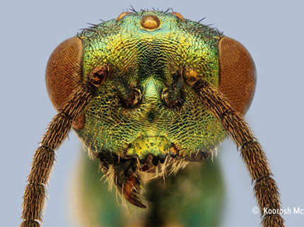

Inselect

At a glance
Inselect facilitates digitization by automating the capture of individual specimens from whole-drawer scans.
Inselect facilitates digitization by automating the capture of individual specimens from whole-drawer scans.